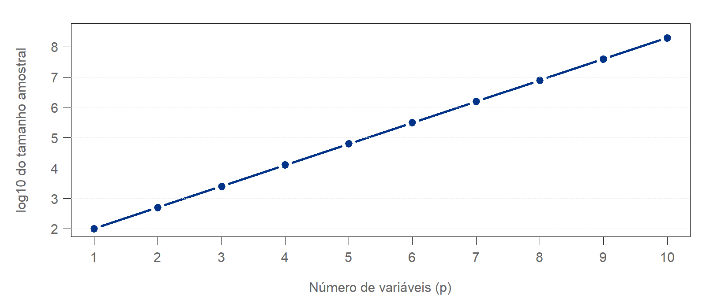
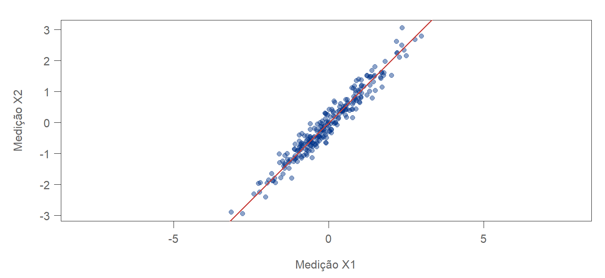
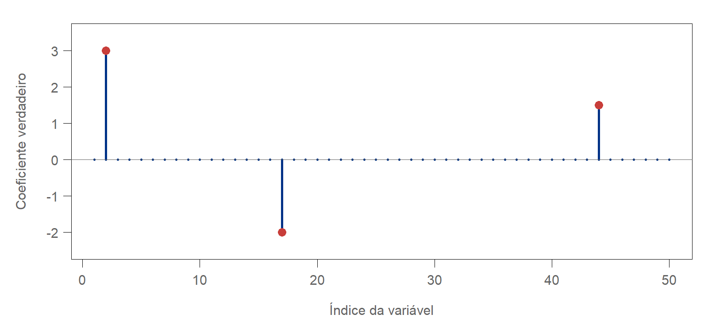
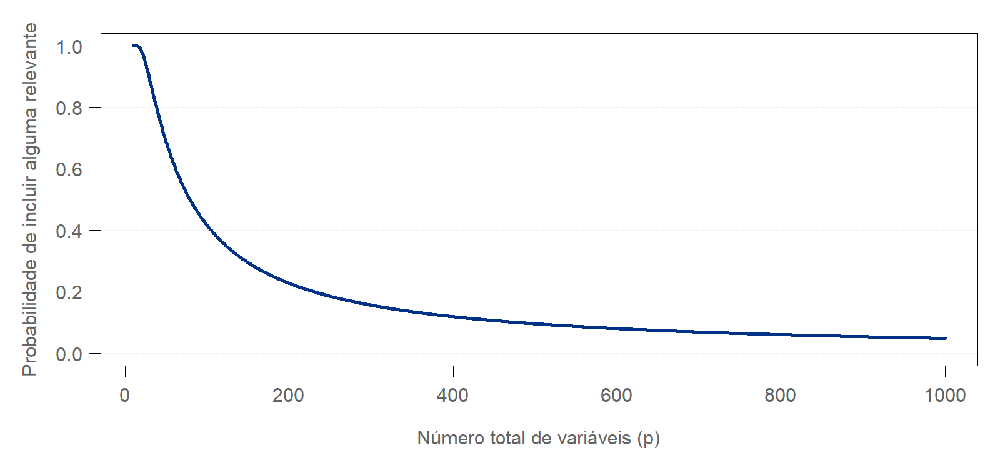

Aprendizado em Alta Dimensão
Estudamos diferentes formas de estimar
\[ r(\mathbf x)=\mathbb E(Y\mid\mathbf X=\mathbf x) \]
Como esses métodos se comportam quando o número de variáveis aumenta?
1.000 medições refletem principalmente três condições de funcionamento.
Muitas variáveis compartilham informação.
Hipótese: redundância.
A resposta depende de cinco entre 1.000 variáveis.
A maioria das variáveis é desnecessária para a predição, dadas as relevantes.
Hipótese: esparsidade.
Os estudos têm a mesma dificuldade apenas porque possuem os mesmos \(n\) e \(p\)?
| Quantidade | Significado |
|---|---|
| \(n\) | Número de observações |
| \(p\) | Número de variáveis observadas |
| \(d\) | Dimensão de uma representação dos dados |
| \(s\) | Número de variáveis ativas na função de regressão |
| \(m\) | Número de parâmetros do modelo |
Podemos ter \(d\ll p\), \(s\ll p\) e, em uma RNA, \(m\gg p\).
Essas quantidades descrevem aspectos diferentes do problema.
Considere entradas uniformes em \([0,1]^p\).
Uma região com comprimento \(h\) em cada coordenada ocupa a fração
\[ \boxed{V=h^p} \]
do volume total. Para \(h=0{,}2\):
\[ p=1:\ 0{,}2,\qquad p=2:\ 0{,}04,\qquad p=5:\ 0{,}00032. \]
A mesma resolução por coordenada cobre uma fração cada vez menor dos dados.
Se \(N_R\) conta as observações na região:
\[ N_R\sim\operatorname{Binomial}(n,h^p), \qquad \mathbb E(N_R)=nh^p. \]
Para obter \(k\) observações em média:
\[ \boxed{n=\frac{k}{h^p}.} \]
Com \(k=20\) e \(h=0{,}2\), temos \(n=20\times5^p\).
Isso ilustra cobertura do espaço sob uniformidade, sem garantir uma contagem mínima.
| Dimensão \(p\) | Fração \(0{,}2^p\) | \(n\) para 20 observações em média |
|---|---|---|
| 1 | \(0{,}2\) | 100 |
| 2 | \(0{,}04\) | 500 |
| 3 | \(0{,}008\) | 2.500 |
| 5 | \(0{,}00032\) | 62.500 |
| 10 | \(0{,}0000001024\) | 195.312.500 |
Esta conta não constitui uma recomendação amostral para qualquer modelo.

Manter o mesmo tamanho de vizinhança em cada coordenada exige crescimento exponencial de \(n\).
Para encontrar \(k\) vizinhos com poucos dados:
\[ d^2(\mathbf x,\mathbf x')= \underbrace{\sum_{j\in S}(x_j-x'_j)^2}_{\text{variáveis relevantes}} + \underbrace{\sum_{j\notin S}(x_j-x'_j)^2}_{\text{demais variáveis}}. \]
Padronizar evita dominância de escala, mas mantém as variáveis irrelevantes na distância.
Regressão local: vizinhanças maiores podem aumentar o viés, enquanto regiões menores contêm poucos dados.
Bases tensoriais: com \(K\) funções por variável, uma construção completa usa
\[ \boxed{K^p\text{ funções de base}.} \]
Com \(K=5\) e \(p=10\): \(5^{10}=9.765.625\) funções.
Restrições como aditividade reduzem essa complexidade.
Para uma classe de funções com suavidade \(\alpha\), sob condições usuais:
\[ \text{erro de estimação integrado}\asymp n^{-\frac{2\alpha}{2\alpha+p}}. \]
Com \(\alpha=2\):
| Dimensão | Taxa |
|---|---|
| \(p=1\) | \(n^{-4/5}\) |
| \(p=4\) | \(n^{-1/2}\) |
| \(p=20\) | \(n^{-1/6}\) |
O crescimento de \(p\) reduz a velocidade de aprendizagem.
Suponha que as variáveis obedeçam a
\[ X_j=a_jZ+\eta_j,\qquad j=1,\ldots,p. \]
Muitas variáveis podem medir aspectos de um mesmo fenômeno.

As duas coordenadas contêm informação fortemente compartilhada.
Uma generalização é
\[ \mathbf X=A\mathbf Z+\boldsymbol\eta, \qquad \mathbf Z\in\mathbb R^d,\quad d\ll p. \]
Se a resposta depende principalmente desses fatores,
\[ Y=g(\mathbf Z)+\varepsilon, \]
uma representação de dimensão \(d\) pode simplificar a predição.
Precisamos preservar o sinal relacionado à resposta.
A ACP constrói combinações lineares:
\[ Z_k=\mathbf v_k^\top\mathbf X. \]
Na regressão por componentes principais, utilizamos
\[ \widehat Y=\hat\beta_0+\sum_{k=1}^{d}\hat\gamma_kZ_k. \]
Considere variáveis independentes:
\[ X_1\sim N(0,100),\qquad X_2\sim N(0,1), \]
\[ Y=5X_2+\varepsilon. \]
Sem padronização, a primeira componente populacional acompanha \(X_1\).
Entretanto, a resposta depende de \(X_2\).
Explicar a variação de \(\mathbf X\) não garante preservar a informação sobre \(Y\).
| Método | Estratégia | Cuidado |
|---|---|---|
| PCR | Regressão em componentes da ACP | Pode descartar sinal preditivo |
| PLS | Componentes que utilizam também \(Y\) | Número de componentes exige validação |
| Ridge | Contrai coeficientes e estabiliza o ajuste | Mantém todas as variáveis |
| Modelo fatorial | Representa fatores compartilhados | Depende da adequação dos fatores |
Com redundância, selecionar uma única variável de cada grupo pode perder informação útil das demais medições.
Considere \(p=1.000\), mas
\[ Y=3X_2-2X_{17}+1{,}5X_{204}+\varepsilon. \]
A função de regressão utiliza apenas \(s=3\) variáveis.
\[ \boxed{s\ll p.} \]
O desafio inclui descobrir quais variáveis são relevantes.

Ilustração com 50 variáveis: apenas três efeitos ativos.
| Conceito | Significado | Exemplo |
|---|---|---|
| Modelo esparso | Poucos efeitos ativos | Cinco coeficientes não nulos |
| Matriz esparsa | Muitas entradas iguais a zero | Contagens de palavras em documentos |
Uma matriz densa pode gerar um problema de regressão esparsa.
Uma matriz esparsa pode conter muitas variáveis relevantes.
As duas propriedades não são equivalentes.
O lasso estima
\[ \boxed{ \hat{\boldsymbol\beta}= \arg\min_{\beta_0,\boldsymbol\beta} \left\{ \frac{1}{2n}\sum_{i=1}^{n} (y_i-\beta_0-\mathbf x_i^\top\boldsymbol\beta)^2 +\lambda\|\boldsymbol\beta\|_1 \right\}. } \]
A penalização \(L_1\) favorece coeficientes exatamente iguais a zero.
O elastic net combina
\[ \lambda\left[ \alpha\|\boldsymbol\beta\|_1 +\frac{1-\alpha}{2}\|\boldsymbol\beta\|_2^2 \right]. \]
Pode ser útil quando existem grupos correlacionados e poucos grupos com sinal.
\[ Y=\sin(X_2)+X_{17}^2+X_2X_{204}+\varepsilon. \]
A função depende de poucas variáveis, mas inclui não linearidade e interação.
Lasso aplicado somente às entradas originais representa efeitos lineares.
Possibilidades:
| Aspecto | Redundância | Esparsidade |
|---|---|---|
| Estrutura | Informação compartilhada | Poucos efeitos relevantes |
| Operação natural | Construir representações | Selecionar variáveis ou efeitos |
| Exemplo | 100 medidas de três fatores | Cinco entre 1.000 variáveis |
| Métodos associados | PCR, PLS, ridge | Lasso, elastic net |
| Risco | Perder sinal ao resumir | Seleção instável ou incorreta |
As hipóteses podem coexistir.
Considere entradas independentes e padronizadas e defina
\[ Z_1=\frac{X_1+\cdots+X_p}{\sqrt p}, \qquad Y=2Z_1+\varepsilon. \]
Na representação original:
\[ \beta_j=\frac{2}{\sqrt p},\qquad j=1,\ldots,p. \]
Todos os coeficientes são diferentes de zero, embora a resposta dependa de uma única combinação.
Dimensão preditiva pequena pode coexistir com coeficientes densos.
Imagine 1.000 variáveis organizadas em 20 grupos correlacionados.
Apenas dois grupos contêm informação necessária à função de regressão.
Possibilidades: elastic net, group lasso com grupos conhecidos ou seleção seguida de representação.
Toda etapa aprendida dos dados deve integrar a validação.
\[ \mathbf y=X\boldsymbol\beta+\boldsymbol\varepsilon. \]
Se \(p>n\), a matriz \(X^\top X\) é singular e os coeficientes de mínimos quadrados não são únicos.
Para coeficientes penalizados e \(\lambda>0\), ridge utiliza
\[ \hat{\boldsymbol\beta}_{R} =(X^\top X+\lambda I)^{-1}X^\top\mathbf y. \]
A regularização torna a solução identificável pelo critério e controla sua variabilidade.
Sob condições adequadas, limites de erro preditivo incluem termos da ordem
\[ \boxed{\sigma^2\frac{s\log p}{n}.} \]
| Termo | Papel |
|---|---|
| \(s\) | Quantidade de efeitos a estimar |
| \(\log p\) | Custo de procurar entre muitos candidatos |
| \(\sigma^2\) | Intensidade do ruído |
| \(n\) | Informação amostral disponível |
Esparsidade reduz a complexidade, mas exige condições sobre os preditores.
A ordem \(s\log p\) não determina sozinha uma amostra recomendada.
A exigência real também depende de:
Prever bem, estimar coeficientes e recuperar o suporte são objetivos distintos.
Se uma representação útil \(\mathbf Z\in\mathbb R^d\) fosse conhecida, poderíamos modelar
\[ Y=g(\mathbf Z)+\varepsilon. \]
Quando precisamos estimá-la, aparece um custo adicional.
A redução de dimensão ajuda quando preserva informação útil e pode ser aprendida.
| Estrutura esperada | Referências para comparação |
|---|---|
| Muitos efeitos pequenos | Ridge |
| Poucos efeitos lineares | Lasso |
| Efeitos esparsos e preditores correlacionados | Elastic net |
| Fatores de alta variância contêm o sinal | PCR |
| Combinações lineares relacionadas a \(Y\) | PLS |
A escolha final depende da validação e da finalidade da análise.
KNN e regressão local
Dependem de uma distância informativa e de observações próximas. Seleção ou redução dimensional pode melhorar a representação.
GAM aditivo
\[ r(\mathbf x)=\beta_0+\sum_{j=1}^{p}f_j(x_j). \]
A aditividade evita estimar uma superfície multivariada geral. Com \(p\) grande, penalizar e eventualmente selecionar funções continua necessário.
Árvores podem ignorar variáveis ao escolher divisões, mas muitas candidatas irrelevantes dificultam encontrar sinal.
Na random forest, se há \(s\) variáveis relevantes entre \(p\), a probabilidade de pelo menos uma delas estar entre \(q=\texttt{mtry}\) candidatas é
\[ \boxed{ 1-\frac{\binom{p-s}{q}}{\binom{p}{q}}. } \]
O boosting pode concentrar o ajuste em variáveis úteis, mas também selecionar ruído ao longo das iterações.

Cálculo com \(s=5\) e \(\texttt{mtry}=10\) fixos. O gráfico ilustra candidatas, sem medir erro preditivo.
A primeira camada totalmente conectada calcula
\[ \mathbf a^{(1)}=\phi\left(W^{(1)}\mathbf x+\mathbf b^{(1)}\right). \]
Com \(H\) neurônios, ela contém
\[ \boxed{H(p+1)\text{ parâmetros}.} \]
A rede pode aprender representações úteis, mas aumentar \(p\) também aumenta os parâmetros.
Arquitetura, regularização e informação amostral continuam essenciais.
Em dados tabulares com \(p\gg n\), comparar a RNA com modelos penalizados é essencial.
Muitos parâmetros não fornecem, por si só, uma explicação para boa generalização.
As hipóteses estruturais também orientam a classificação.
| Situação | Métodos a comparar |
|---|---|
| Efeitos aproximadamente lineares | Regressão logística penalizada |
| Separação por combinação linear | SVM linear regularizada |
| Fatores com informação preditiva | Componentes + classificador |
| Não linearidade e interações | Ensembles ou RNA regularizada |
Escolher métricas conforme o objetivo: log-loss, AUC, sensibilidade, calibração ou custo de decisão.
Em cada partição de treinamento da validação cruzada:
O conjunto de teste participa apenas da avaliação final.
| Cenário | Entradas | Função de regressão |
|---|---|---|
| Esparso | Preditores independentes | Cinco efeitos ativos |
| Redundante | Medições de três fatores | Depende dos três fatores |
| Misto | Grupos correlacionados | Depende de um grupo |
Comparar ridge, lasso, elastic net, PCR e KNN.
Variar \(n\in\{100,300,1000\}\) e \(p\in\{20,100,500\}\).
Manter controladas a variância do sinal e a variância do ruído ao variar \(p\).
Predição: erro em teste e variabilidade entre repetições.
Seleção: quantas variáveis ativas foram recuperadas e quantas irrelevantes entraram.
Estabilidade: quanto o modelo ou a seleção muda entre amostras.
Custo computacional: tempo de ajuste e escolha de hiperparâmetros.
Um método pode prever bem mesmo quando a seleção de variáveis varia.
Redundância: muitas entradas compartilham informação. Podemos buscar uma representação compacta.
Esparsidade: poucos efeitos são necessários. Podemos buscar seleção de variáveis ou funções.
Tamanho amostral: depende da estrutura, do ruído e da precisão desejada, além de \(p\).
Escolha do método: deve combinar hipóteses plausíveis e avaliação adequada.
\[ \boxed{\text{Mais dados e estrutura adequada tornam a aprendizagem viável.}} \]